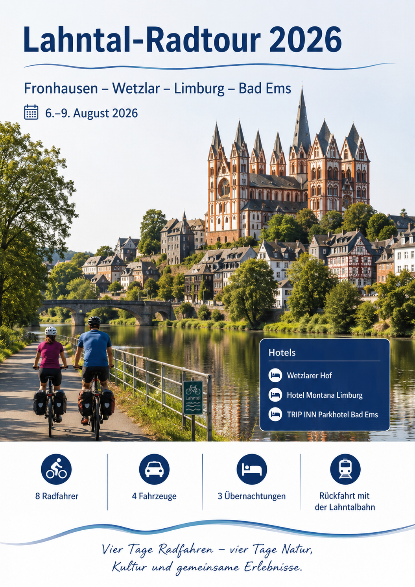

Donnerstag, 6. August 2026
Marburg (Lahn) → Fronhausen (Lahn)
Die konkrete Zugnummer und die minutengenaue Zeit bitte kurz vor der Reise prüfen. Bei Bauarbeiten kann sich die Verbindung ändern.
Aktuelle Verbindung bei der DB prüfen
Verena & Jürgen · Bine & Tommi · Gudrun & Jürgen · Birgit & Klaus
8 Personen · 8 Fahrräder · 4 Autos
Marburg (Lahn) → Fronhausen (Lahn)
Die konkrete Zugnummer und die minutengenaue Zeit bitte kurz vor der Reise prüfen. Bei Bauarbeiten kann sich die Verbindung ändern.
Aktuelle Verbindung bei der DB prüfenBad Ems → Wetzlar
Mit acht Fahrrädern mindestens 25–30 Minuten früher am Bahnsteig sein und die Gruppe auf mehrere Mehrzweckbereiche verteilen. Fahrradmitnahme ist kapazitätsabhängig.
Aktuelle Verbindung bei der DB prüfenDie bisherigen Google-Maps-Autorouten wurden entfernt. Die Schaltflächen führen jetzt zu Radweg-Routen bzw. zu offiziellen Etappenseiten.
Auf dem Lahntalradweg. In der Komoot-Tour ist Marburg als Start enthalten; ihr steigt in Fronhausen in den dargestellten Streckenverlauf ein.
Nach der Bahnfahrt Wetzlar → Weilburg folgt ihr der offiziellen Etappe des Lahnradwegs bis Limburg/Diez (offiziell ca. 46 km).
Lahntalradweg über Diez, Balduinstein, Obernhof, Nassau und Dausenau.
Obertorstraße 3, 35578 Wetzlar
NavigationAm Schlag 19, 65549 Limburg
NavigationMalbergstraße 7, 56130 Bad Ems
NavigationWetzlar: P+R Bahnhof Nordseite
Wetzlar öffnenFronhausen: Bahnhof / P+R / B+R
Fronhausen öffnen